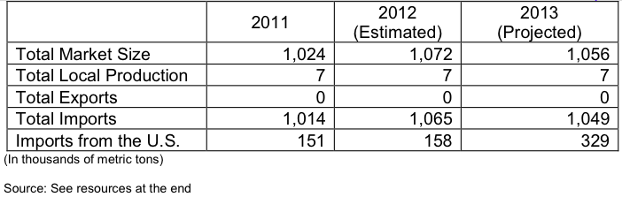

The oilseed meal supply in Colombia is composed mainly of soybean meal, cottonseed meal, palm kernel meal, and sesame seed meal. All fishmeal used in the country is imported from Perú, Chile, and Ecuador. The FTA eliminated duties on all imports of U.S. soybeans and soybean meal. Primary competitors are MERCOSUR countries.
Total domestic consumption of soybean meal and palm kernel meal are forecast to
make up 90 percent of Colombian vegetable meal used for animal feed production.
U.S. export market share of soybean meal to Colombia dramatically dropped to 5 percent against MERCOSUR countries in recent years. Zero duties and no quota under the FTA have greatly helped soybean meal exports recover and expand market share against competitors.
The FTA has created new opportunities for U.S. exporters and investment opportunities for new oilseed crushing facilities and feed manufacturing plants in Colombia. Soybean meal imports will continue to increase in the following years due to a rising middle class and shifting dietary patterns towards more animal protein that generates a significant demand for more animal feed to satisfy primarily the poultry and swine sectors.
Trade Shows: AgroExpo is an agro-industry and livestock exhibition that takes place in Bogota, Colombia, every two years in the month of July. Information can be found at www.corferias.com.
The American Soybean Association (ASA) maintains a regional consultant for trade servicing in Caracas, Venezuela, for the Andean region. The consultant is Ms. Belinda Pignotti, Program Coordinator, Edif. Banco del Orinoco, Of. 7-D, Piso 7. Ave. Francisco de Miranda, La Floresta. Telephone (58212) 285-7697, mobile phone (58414) 308-7705, fax (58212) 285-7697, E-mail: asacar@cantv.net , Website: www.soygrowers.com
The local feed industry, a main user of imported soybean meal, is represented by the Feed Chamber at the National Association of Industrialists: Calle 73 No. 8-13, Piso 6, Torre A, Bogotá, D.C., Colombia. Information on the feed sector in Colombia can be obtained from Ms. Luz S. Kuratomi, Executive Director of Feed Industry Chamber at telephone (57-1) 326-8500 Ext. 2419, fax (57-1) 347-3198, E-mail: lkuratomi@andi.com.co Web site: www.andi.com.co
The Office of Agricultural Affairs at the American Embassy Bogotá can be contacted via e-mail at agbogota@usda.gov or telephone (57-1) 275-4623, fax (57-1) 275-4525.